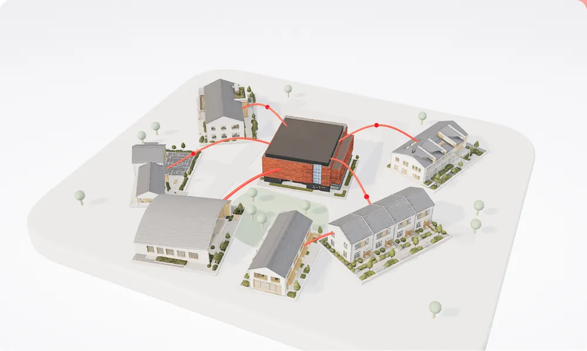

AThe route: understand, explore, practise, use
Carry the Story with Confidence
Four steps, and everything you need for each.
Read the story, step into the community, rehearse the conversation, then take the materials with you. The thread below is the order.
Understand
What Equinix does in its communities, and the words we use for it.
Explore
Step inside the places the story is about.

Practise
Rehearse the conversation before it is real.
Use
What to have in hand when the question comes.
BThe pinboard: the ten pinned in their four groups
Carry the Story with Confidence
Everything the team has made, on one board.
Ten resources in four groups, the same list the curtain carries, pinned where you can see them all at once.
Featured
IntranetCommunity Engagement Employee HubExplore Equinix community engagement resources.Jodi Baumann WebinarSTEPS: Sustainability & Customer ConversationsSustainability as a customer value driver.Patricia Leyva DeckSustainability at Equinix: 2026 Q3 UpdateCommitments, reporting tools, proof points.Patricia LeyvaResources
GuideGrant Partner GuideTrusted local, regional and global partners.Jodi Baumann CardTalking About Data Centers: Dinner Table GuideKey messages and straight answers.Jodi Baumann BrochureOur Five Community PrinciplesInfrastructure, power, jobs, resources, inclusion.Jodi Baumann Cheat sheetFY25 Sustainability MetricsCurrent environmental, social and governance figures.Jodi BaumannCThe index: numbered rows in four groups, a paper card floats beside the row you are on
Carry the Story with Confidence
Ten things the team has made for you.
Start with the first three. Everything opens in a new tab behind the Equinix sign-in.
Start here
01Community Engagement Employee HubEverything community engagement, in one place.Jodi Baumann · Intranet↗ 02STEPS: Sustainability & Customer ConversationsSustainability as a customer value driver.Patricia Leyva · Webinar↗ 03Sustainability at Equinix: 2026 Q3 UpdateThis quarter’s commitments and proof points.Patricia Leyva · Deck↗Resources
04Grant Partner GuideTrusted partners for community work.Jodi Baumann · Guide↗ 05Talking About Data Centers: Dinner Table GuideStraight answers for everyday conversations.Jodi Baumann · Card↗ 06Our Five Community PrinciplesThe five promises, as printed.Jodi Baumann · Brochure↗ 07FY25 Sustainability Metrics Cheat SheetThe numbers, when someone asks.Jodi Baumann · Cheat sheet↗Practice
08Practice a Community ConversationRealistic stakeholder moments to work through.Jodi Baumann · Scenario cards↗ 09Practice the Community Conversation in YoodliSay it out loud and get feedback.Myriam Whalen · Yoodli↗Facilitator
10Community Engagement Workshop Talk TrackRunning the workshop yourself.Jodi Baumann · Talk track↗DThe ledger: a true table, columns, a soft red wash on the row you are over
Carry the Story with Confidence
Ten things the team has made for you.
Start with the first three. Everything opens in a new tab behind the Equinix sign-in.
| Resource | What it is for | From | Type | ||
|---|---|---|---|---|---|
| Start here | |||||
| 01 | Community Engagement Employee Hub | Everything community engagement, in one place on the intranet. | Jodi Baumann | Intranet | ↗ |
| 02 | STEPS: Sustainability & Customer Conversations | Sustainability as a customer value driver. | Patricia Leyva | Webinar | ↗ |
| 03 | Sustainability at Equinix: 2026 Q3 Update | This quarter’s commitments, reporting and proof points. | Patricia Leyva | Deck | ↗ |
| Resources | |||||
| 04 | Grant Partner Guide | Trusted local, regional and global partners. | Jodi Baumann | Guide | ↗ |
| 05 | Talking About Data Centers: Dinner Table Guide | Straight answers for everyday conversations. | Jodi Baumann | Card | ↗ |
| 06 | Our Five Community Principles | The five promises, as printed. | Jodi Baumann | Brochure | ↗ |
| 07 | FY25 Sustainability Metrics Cheat Sheet | The numbers, when someone asks. | Jodi Baumann | Cheat sheet | ↗ |
| Practice | |||||
| 08 | Practice a Community Conversation | Realistic stakeholder moments to work through. | Jodi Baumann | Scenario cards | ↗ |
| 09 | Practice the Community Conversation in Yoodli | Say it out loud and get feedback. | Myriam Whalen | Yoodli | ↗ |
| Facilitator | |||||
| 10 | Community Engagement Workshop Talk Track | Running the workshop yourself. | Jodi Baumann | Talk track | ↗ |
EThe expandable index: a row opens in place with the detail and the Open button; one at a time
Carry the Story with Confidence
Ten things the team has made for you.
Start with the first three. Open a row to see what it is for, then take it with you.
Start here
Build confidence discussing sustainability and using it as a customer value driver: the STEPS webinar for sellers, with the slides as presented.
- From
- Patricia Leyva, Sustainability PMO
- Type
- Webinar deck, PowerPoint, 42 slides
- Where
- SharePoint, Equinix sign-in
- Good for
- Before a customer conversation where sustainability will come up